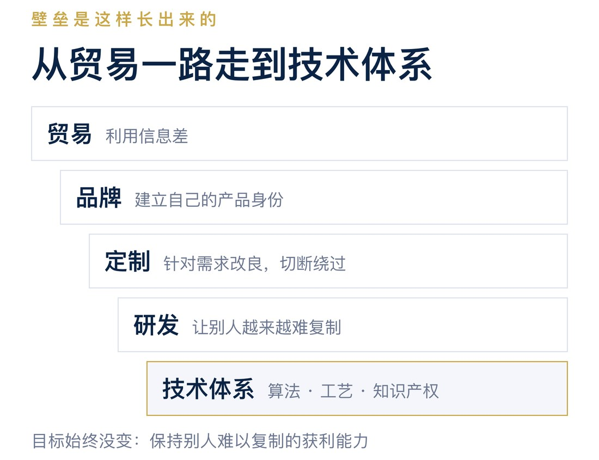
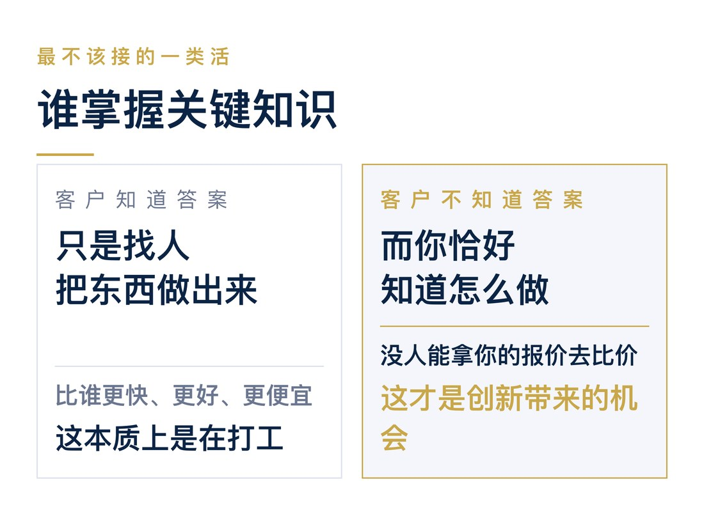

英语中有一句著名的话：Knowledge is power.
我们通常把它翻译成“知识就是力量”，认为知识是一种生产力。掌握知识，就能够把事情做得更好、更快、更省。
但我觉得，这句话还可以从另一个角度理解。
知识就是权力。
知识不仅让你拥有解决问题的能力，还可能赋予你某种别人没有的特权。
别人不知道，而你知道；别人做不到，而你做得到。这种不对称性，赋予了你特殊的商业地位。
科学家喜欢用知识发现世界的规律，工程师喜欢用知识改进产品，而生意人则懂得利用知识带来的优势获利。
科技创业者需要学会的，不只是把知识转化为生产力，更是把知识转化为商业权力。
尤其是在创业初期。
那时候，你没有产品，没有资本，没有团队，也没有品牌。任何需要与成熟企业正面竞争的东西，你都没有。
你唯一拥有的，就是知识。
如何利用这个唯一的杠杆赚钱，才是科技创业首先需要解决的问题。
◇ ◇ ◇
一、科技创业者为什么不会做生意？
科技企业的创始人，大多具有工程师或者科学家的背景。
在创业之前，他们生活在一个理性、数字化的世界里。
科学家追求的是发现世界的规律，解决未知的问题；工程师则希望通过自己的方案，让事情做得更快、更好、更省。
他们习惯用数据判断优劣，用实验验证对错，用技术成果证明自己的能力。
这当然是一种很好的职业习惯。
但问题在于，当他们开始创业、开始做生意时，往往仍然试图用同样的方式证明自己。
很多科技创业者认为，只要证明自己的技术更先进、方案更优秀，客户自然就会接受。
于是，他们向客户介绍技术原理、性能指标、实验结果，努力证明自己的方案为什么更好。
与其说是在销售（Sales），不如说是在开一场项目验收会，或者技术评审会。
他们相信，只要通过了技术评审，生意自然就能成交。
但商业世界不是科学世界。
科学研究需要证明自己是对的，做生意却需要让交易发生。
少数创业者后来逐渐理解了客户价值，开始学会从客户的角度讲故事。
例如，不再向客户解释发动机的效率提高了多少，而是直接告诉客户：
“使用我们的方案，您每年可以省下多少油钱。”
这当然好了很多。
但我认为，这样仍然存在一个问题。
你把问题说清楚了，也把自己的价值锁死了。
当你告诉客户，你的方案每年能节省一万元油钱时，客户自然会围绕这一万元来判断你的价格。
你的技术价值变成了一个可以计算、可以比较的数字。客户也就可以拿着这个数字去比较其他供应商。
你从证明技术先进，变成了证明性价比更高。
但本质上，你仍然是在竞争。
在我看来，这是一种竞争主义的思维：在一个已经被定义好的市场里，证明自己比别人更好。
◇ ◇ ◇
二、科学家创业，真的那么糟糕吗？
还有一种科学家式的创业思维，经常受到批评。
“我要改变世界。”
“我要创造一种前所未有的技术。”
“我要颠覆整个行业。”
很多人认为，科学家创业最大的问题就是不接地气。他们喜欢谈理想、谈未来、谈改变世界，却不知道客户真正需要什么。
但我反而认为，这种思维比单纯强调技术性能或者成本优势的创业思维好得多。
因为科学家有两个非常重要的优点。
第一个优点，是卖梦想，而不是卖性能。
当一个工程师告诉客户，他的方案比竞争对手快20%、便宜30%时，他实际上已经把自己的价值锁定在一个可以比较的范围内。
客户会计算，这20%的性能提升究竟值多少钱，然后再去比较其他供应商。
但当一个科学家说，他希望实现一件过去从来做不到的事情时，他实际上打开了一个全新的价值空间。
因为梦想的价值，往往没有办法用现有的产品价格和性能指标来衡量。
梦想的好处，是没有把价值提前锁死。
科学家的第二个优点，我认为更加重要。
他们喜欢思考问题，而不是仅仅证明方案的合理性。
工程师往往习惯在一个已经定义好的问题中寻找最优解：方案是否合理？成本是否最低？技术是否可行？性能能否达到要求？
而科学家往往更愿意追问：
为什么一定要这样做？有没有可能从根本上改变这件事情？有没有一个别人还没有想到的问题？
这是一种非常有价值的能力。
因为创业最重要的事情之一，恰恰是找到一个真正有价值的问题。
所以，我并不认为科学家“改变世界”的想法有什么不好。
他们至少保留了两个重要的创业优势：敢于想象尚未实现的梦想，也愿意思考尚未解决的问题。
唯一的问题是：客户不 care。
客户并不关心你是不是想改变世界，也没有义务为你的理想付钱。
所以，科学家创业真正需要改变的，不是放弃梦想，而是改变梦想的主人。
不要卖自己的梦想，要卖客户的梦想。
客户有一件非常想做、却一直做不到的事情，而你恰好知道如何做到。
你卖给客户的应该是他梦想实现的可能性，而不是技术原理、方案的合理性，或者某个性能指标。
客户需要的是结果，不是一次科学报告。
◇ ◇ ◇
三、创业初期，知识是你唯一的杠杆
科技企业刚刚起步的时候，往往也是最困难的时候。
你需要活下来，需要获得现金流，还需要逐渐组建团队、建立研发能力和组织体系。
但这些事情都需要钱，而创业初期，你最缺的恰恰就是钱。
这里有一个科技人员特别容易忽略的问题。
当一个科技人员决定创业的时候，他就不再是在打工了。
过去，你可能在一家很大的科技企业工作。
公司有资本、产品、品牌、团队，有完善的研发体系和销售渠道。
需要开发新产品，可以申请预算；需要完成项目，可以组织团队；需要采购设备，可以走公司的采购流程。
你很容易习惯于依靠这些资源解决问题。
但必须明白：
这些资源属于公司，并不属于你。
当你决定离开公司、自己创业时，它们并不会跟着你走。
你过去可以调动几十名工程师，现在可能连第一个员工的工资都付不起。
你过去可以申请几百万元的研发预算，现在可能连购买设备的钱都需要精打细算。
你过去可以依靠公司的品牌见到客户，现在客户甚至不知道你是谁。
你从一个花钱解决问题的人，变成了一个必须先找到赚钱机会的人。

那么，你究竟拥有什么？
不是原来公司的资本、产品、团队和品牌。
你真正能够依靠的，只有自己积累的知识、经验和能力。当然，这里指的是个人合法掌握的专业知识，而不是原公司的商业秘密和知识产权。
这就是创业时最重要的杠杆。
因此，一个科技企业在起步阶段，最理想的商业模式应该具备两个特点：
极低的成本支出，以及极高的毛利率。
只有这样，才能用有限的资金维持运营，并从每一笔交易中积累足够的利润，逐步建立团队和研发体系。
问题是，你凭什么获得这样的商业机会？
靠产品吗？你还没有产品。
靠资本吗？你没有资本。
靠团队和品牌吗？你同样没有。
如果一开始就选择与成熟企业竞争产品性能、价格、制造能力或者销售渠道，实际上是在用自己最弱的地方，挑战别人最强的地方。
这怎么可能是一个好的创业策略？
相比之下，知识有一个其他资源很难具备的特点：
它可以在很少占用资金的情况下，创造巨大的价值差异。
一台机器需要购买，一个团队需要支付工资，一个工厂需要投入资本。
但如果你已经掌握了某种知识，利用它解决一个高价值问题，可能只需要很少的额外投入。
客户愿意为结果支付一万元，而你可能只需要十元就能完成。
这种机会，才可能让一家没有资本的小公司，获得惊人的毛利和现金流。
所以，科技创业初期，不应该急着建立完整的产品体系、研发体系和组织架构。
你应该先问自己：
我究竟知道什么别人不知道、而且有人愿意为之付钱的事情？
先利用知识赚钱，再用赚来的钱建立产品、团队和研发能力。
而不是先投入大量资金建设这些东西，再希望未来有客户愿意购买。
◇ ◇ ◇
四、Oracle：先用知识赚钱，再用利润建立企业
Oracle的创业经历，在我看来就是一个很好的例子。
1977年，Larry Ellison和合伙人创办了Oracle的前身Software Development Laboratories。
他们最初只有2,000美元，没有获得风险投资。
但他们掌握了软件开发知识，并且发现了一个别人尚未充分认识到的商业机会。
早在1970年，IBM研究员Edgar Codd就提出了关系数据库理论。
但当时，关系数据库主要仍处于研究和早期商业化阶段。不少人担心这种技术虽然理论上优雅，却难以满足实际商业应用对性能的要求。
Ellison却认为，关系数据库能够成为真正的商业产品。
他没有发明关系数据库理论，也没有比IBM更雄厚的研发资源，但他看到了一个大公司尚未充分商业化的机会。
问题是，发现机会不等于有钱开发产品。
怎么办？
先去做生意。
Ellison和团队开始承接软件开发与咨询项目，为企业客户解决技术问题。
根据Ellison在1995年接受美国史密森尼学会采访时的回忆，他们通过咨询业务积累了大约20万美元的资金。
随后，他们决定停止咨询，将资源集中到关系数据库产品的开发上。
1979年11月，Oracle的商业数据库产品实现了首次销售和安装。

这个故事最值得注意的，不是Oracle后来成为了多么成功的软件公司，而是它在创业初期采用的资金与技术发展顺序。
它首先利用已经掌握的知识，为客户提供服务，获得收入和现金流。
然后，再用积累的资金开发自己的产品。
知识是杠杆，交易提供现金流，产品和研发则是后来逐步建立的商业壁垒。
更有意思的是，Oracle并没有选择做一家比IBM更好的计算机公司。
它利用IBM已经公开的技术思想，发现了一项别人尚未充分商业化的机会。
当然，Oracle后来的成功离不开长期研发、产品质量、销售能力和企业管理，不能简单归结为一次套利。
但它早期的经历说明了一件重要的事情：
创业初期，没有资本并不可怕。真正可怕的是，你虽然拥有知识，却不知道怎样利用它获得第一笔利润。
◇ ◇ ◇
五、不要创业去做一家比老东家更好的公司
很多科技人员决定创业，是因为觉得自己能够把原来公司的业务做得更好。
他在原来的公司工作多年，非常熟悉产品和技术，也看到了许多问题。
他认为公司的技术路线不够先进，产品设计不够合理，管理效率不够高，或者研发方向存在错误。
于是，他决定出来创业，做一家比老东家技术更先进、产品更优秀、效率更高的公司。
这听起来非常合理。
而且，这恰恰是许多投资人最喜欢的创业故事。
一个有多年行业经验的技术专家，带着对产业的深刻理解出来创业，要用更先进的技术挑战原来的行业龙头。
市场已经存在，客户已经存在，产品需求也已经得到验证。
似乎只要给他足够的资金，就能建立一家更优秀的企业。
但我认为，这可能恰恰是最没有意义的一种科技创业。
因为你选择了一个别人已经定义好的问题，试图用一个更好的解决方案，去挑战一家成熟企业。
你认为自己技术更好，但忽略了一件事：
技术只是企业竞争中的一个因素，而你失去的却是整个企业的资源。
原来的公司有产品、客户、品牌、团队、资本、供应链，以及多年积累的组织能力。
而你只有知识和经验。
即使你的技术真的比老东家先进，又能怎么样？
你仍然需要投入大量资金开发产品，招聘工程师，搭建供应链，寻找客户，建立品牌。
等到产品终于开发完成，你会发现自己进入的还是原来那个市场。
客户仍然在比较性能和价格。
而你的老东家不仅拥有成熟产品和稳定供应链，还可以通过改进技术、降低价格来应对你的竞争。
这不是知识套利，这是正面竞争。
而且是一个缺乏资本和组织资源的新公司，去挑战一家拥有这些优势的成熟企业。

为什么要这样创业？
我认为，这实际上还是一种打工思维。
过去，你在公司里发现技术问题，提出一个更好的解决方案，希望公司投入资源把它实现。
现在，你离开公司，发现同样的问题，提出更好的解决方案，希望投资人投入资源把它实现。
你只是把原来的老板换成了投资人，把原来的研发项目换成了一家创业公司。
但你仍然在做同一件事情：证明自己的技术方案比别人更好。
当然，替代现有企业也可能是成功的商业战略。但对于资源有限的科技创业者来说，这往往不是最有利的起点。
真正值得寻找的机会，不应该只是怎样把老东家的产品做得更好。
而应该是你发现了一个老东家没有发现、没有重视，或者没有能力解决的高价值问题。
不要试图建立一家比老东家更好的公司，而要尝试做一件老东家还不知道怎么做的生意。
◇ ◇ ◇
六、知识究竟应该怎样变成钱？
在我看来，做买卖的方式其实很简单。
除了依靠权力收租，再就是资源交换和利用信息差。
科技企业拥有的核心资源是知识。因此，科技企业的商业模式，本质上就是如何把知识转化为可以获利的东西。
大致有三种方式。

第一种，把知识变成权利。
典型的例子就是版权、专利和其他知识产权。
通过法律赋予知识某种排他性，企业可以依靠这种排他性获得收益。
第二种，把知识变成产品。
把知识转化为软件、机器、设备或者其他技术产品，然后在市场上出售。
这是大多数科技企业最熟悉的商业模式。
第三种，把知识变成交易信息。
也就是贸易和服务。
你知道别人不知道的事情，掌握别人不知道的方法，知道怎样以更低的成本获得别人需要的结果。
然后利用这种知识优势进行交易。
我认为，第三种方式恰恰是科技创业者最容易忽略，也最值得重视的。
因为前两种方式，都容易让知识进入与传统产品类似的竞争。
你的专利要与其他技术竞争，你的产品要与其他产品竞争。
而第三种方式，直接利用知识的不对称性创造交易机会。
知识最好的商业模式，可能不是产品化，而是交易套利。
尤其是在创业早期。
◇ ◇ ◇
七、套利才是知识最核心的商业优势
什么是套利？
简单说，就是一毛钱的东西，一块钱卖给客户。
例如，一个客户有一个难题。
他愿意花十块钱解决，却一直没有找到办法。
而你恰好知道，一毛钱就可以做到。
于是，你花一毛钱买来，一块钱卖给客户。
客户很高兴，因为他原本愿意花十块钱。
你也很高兴，因为你赚取了巨大的价差。
这就是知识的商业价值。
这里的套利，并不完全是金融市场上严格意义的无风险套利，而是利用知识、信息和能力的不对称，发现别人看不到的交易机会。
微软：先找到交易，再组织技术资源
微软早期与IBM的合作，是一个很有代表性的例子。
1980年，IBM正在开发个人计算机，需要一个操作系统。
微软当时主要经营编程语言等软件业务，并没有现成的操作系统可以直接交付。
如果按照传统工程师的思维，微软应该立即组织团队，从头开发一个更加先进的操作系统。
但微软采取了另一种方式。
它从Seattle Computer Products获得了86-DOS的授权，后来购买了相关权利，再进行修改和适配，为IBM提供操作系统。
更重要的是，微软在商业安排中保留了向其他计算机厂商授权软件的权利。
这意味着，它并没有把自己变成一个只为IBM完成技术项目的承包商。
相反，它利用IBM的需求，取得并发展了一项可以向更多客户销售的软件业务。
微软当然需要完成技术开发、兼容性适配和后续维护，但这笔生意最有价值的地方，并不是它首先发明了世界上最先进的操作系统。
而是它看到了一个重要客户的需求，知道如何利用已有技术资源满足需求，并通过商业安排保留了更大的市场机会。
客户需要一个操作系统，微软不必先发明一个操作系统。
它首先抓住交易机会，再组织技术资源完成交付。
后来，随着个人计算机市场的发展，微软继续投入研发，建立软件产品、授权体系和庞大的生态系统。
一笔最初依靠知识和商业判断完成的交易，逐渐发展成了长期的产品与商业优势。
这正是我所说的知识套利。

你不一定需要拥有最先进的技术，但必须知道如何利用技术，完成别人没有看到的交易。
一个理想的科技创业交易
再举一个简单的假设。
客户有一个难题。
他愿意花一万元解决，但一直没有解决。
你恰好知道，利用一种最新的技术方法，可能只需要十块钱就能完成。
于是，你找到客户，说：
“这个问题我可以帮你试一下。五千块钱，你愿不愿意？”
客户想了一下。
原来一万元都解决不了，现在只要五千元，值得尝试。
于是他答应了。
你接着说：
“那你先付三千元定金。我试一下。毕竟是新技术，不敢保证一定成功。如果最后做不成，我退给你两千元。”
于是，双方开始合作。
如果成功了，客户用五千元解决了一个原本一万元都解决不了的问题，而你可能只花费了很低的直接技术成本，就获得了可观的收入。
如果失败了，你退还两千元，但保留一千元作为尝试的费用，用来分担试验成本。

当然，这只是一个简化的交易模型。实际成本还包括人工、时间和试验费用，双方也需要事先约定交付、风险和退款条件。
但它说明了一个非常重要的商业逻辑：
客户为实现自己的梦想付费，而创业者利用知识优势，以很低的成本尝试实现它。
许多人可能认为，这样做生意不现实。
科技企业怎么能还没有把产品做好，就先去找客户收钱？
但我认为，高科技企业的创业，恰恰应该尝试从这样的交易开始。
你不需要一开始就建立庞大的团队，购买昂贵的设备，或者开发完整的产品。
你首先找到客户，确定他愿意付钱，再利用自己掌握的知识组织资源，完成交易。
先利用知识创造现金流，再利用现金流建立企业。
如果等到产品全部开发完成，再去市场上销售，你可能已经失去了知识带来的部分独特优势。
原本的知识套利机会，最终变成了普通的产品竞争。
◇ ◇ ◇
八、从贸易到产品：让客户无法轻易绕过你
当然，如果你只是简单地买来卖去，也会遇到一个问题。
客户可能很快就发现，你卖给他的东西其实是从别的地方采购来的。
那么，下次他为什么还要找你？
他完全可以绕过你，直接向供应商购买。
你的套利机会就消失了。
所以，你需要开始建立自己的产品。
最简单的办法，就是采购现有产品，贴上自己的品牌，以自己的产品和服务向客户销售。
这不一定需要你从头开发技术，也不一定需要拥有自己的工厂。
但贴牌本身并不能保证客户不会找到原始供应商。
所以，更进一步的方法，就是针对客户的具体需求，对标准化的外采产品进行定制改良。
例如，市场上有一种标准设备，能够完成客户需要的大部分功能，但并不完全符合他的使用要求。
你采购这款设备，修改接口、调整结构、增加功能，或者改善某个性能。
这样一来，你做了两件事情。
第一，更好地满足了客户的需求。
原本的标准产品只能解决客户80%的问题，现在经过改良，可以解决95%，甚至100%。
客户自然更愿意购买。
第二，增加了客户绕过你直接采购的难度。
客户即使找到了原始供应商，也只能买到未经改良的标准产品。
而他真正需要的，是你定制后的版本。
这样，你就从一个可以被轻易绕过的贸易商，变成了一个拥有独特产品的供应商。
当然，真正的壁垒不是隐藏产品来源，而是你的改良确实创造了客户需要、又不容易从其他地方获得的价值。
定制既增加了客户价值，也提高了客户绕过你的难度。
这就是从贸易走向产品化的重要一步。

而且，你未必需要投入大量研发。
有时候，只需要一个很小的改良，就能够形成有效的产品差异。
关键并不在于技术有多复杂，而在于这个改良是否能够保护你的交易优势。
◇ ◇ ◇
九、研发是为了什么？
假如客户开始研究你的产品，竞争对手也开始模仿你的设计。
原本的定制改良，很快就可能被别人学会。
怎么办？
那就需要继续研发。
你可以改进产品结构，开发新的软件模块，优化算法，积累专有工艺，或者建立更复杂的技术系统。
这就是我认为研发真正应该承担的商业任务。
研发不是为了技术先进而研发，而是为了不断加深企业独有的知识和能力优势。
一开始，你可能只是做贸易。
后来，你有了自己的品牌。
再后来，你开始定制产品。
然后建立自己的研发能力，最终形成专有算法、复杂工艺、知识产权和完整的技术体系。
随着这个过程的发展，你的商业壁垒也越来越强。

但整个过程的目标没有改变。
仍然是利用知识与能力的不对称，获得别人无法轻易获得的利润。
产品和研发，并不是两个独立于商业活动之外的目标。
它们是不断强化套利能力的手段。
这里需要特别强调：
技术不是为了比别人更好，而是为了让别人更难获得与你相同的商业优势。
当然，提高性能、降低成本可以帮助企业创造优势。
但技术性能本身不应该成为最终目标。
例如，一家企业通过大量研发，把某个技术指标从90分提高到95分。
听起来是一个不错的成果。
但如果客户根本不需要这5分，竞争对手也很容易做到，那么它可能并没有创造多少商业价值。
而另一家企业，只是通过一个简单的技术改良，让某种过去无法完成的操作变得可行。
虽然技术进步看起来并不惊人，却可能帮助企业获得一个别人难以进入的市场。
这才是有商业意义的研发。
贸易利用信息差，产品保护交易优势，研发加深技术壁垒。
但这些都只是手段，核心仍然是保持一种别人难以复制的获利能力。
◇ ◇ ◇
十、最不应该做的，是客户已经知道怎么做的项目
按照这样的思路，科技企业最应该避免什么样的业务？
我认为，就是那种客户已经完全理解的问题。
客户知道自己要什么，知道技术原理，知道这件事能够实现，甚至知道应该用什么方法。
他只是需要找一个人，把东西做出来。
于是，他找到你。
你根据他的要求设计、开发、交付。
看起来，这也是科技企业的业务。有合同，有收入，也有技术开发。
但我认为，这种业务有一个根本的问题。
你没有知识优势。
客户已经知道要做什么，也知道怎么做。
他只是没有时间、没有人员，或者不愿意自己动手。
那么，你与其他供应商之间的区别是什么？
无非就是谁做得更快，谁做得更好，谁的价格更低。
只要市场上有足够多的人能够完成这项工作，你的利润就会受到竞争的限制。
你可能拥有很好的工程能力，也可能获得稳定的收入。
但从知识套利的角度来看，这不是最理想的科技创业。
这本质上是在打工。
只不过，普通员工按月领取工资，而你以公司的形式承接项目，按合同收取费用。

当然，工程外包和技术服务也可以成为很好的生意，执行能力、信誉和组织效率也可以形成壁垒。
但那是另一套商业逻辑。
如果目标是利用创新获得超额利润，那么最不应该做的，就是把自己变成一个客户随时可以替换的技术执行者。
客户知道答案，只是找你来做，那是打工。客户不知道答案，而你知道，才可能是创新带来的商业机会。
Oracle早期也承接软件开发项目，但它并没有永远停留在按照客户要求完成项目的阶段。
它利用这些项目积累资本，然后把资源投入自己发现的数据库商业机会。
这说明，技术服务本身不是问题。
关键在于，你是否能够利用它获得独特的商业优势，并将这种优势转化为企业长期拥有的能力。
◇ ◇ ◇
十一、科技创业最难的，不是把东西做好
按照这样的思路，科技创业最难的事情是什么？
不是技术研发，也不是把产品做得足够完美，甚至不是证明自己的技术比别人先进。
最难的是找到那个有价值的问题，找到真正愿意付钱解决问题的客户。
一个客户愿意为解决问题支付一万元，而你知道一种只需要十元的方法。
这就是一个可能具有巨大商业价值的机会。
但如果没有那个愿意支付一万元的客户，你的十元技术再先进，也只是一个技术。
很多科学家和工程师会把大量时间投入技术开发，因为这是他们熟悉而且擅长的事情。
他们喜欢解决技术难题，也习惯通过完成一个漂亮的系统来证明自己。
但技术难题未必就是商业难题。
你能不能找到那个愿意付钱的人？能不能发现他真正想实现什么？能不能找到一种别人不知道的低成本方法？又能不能设计一笔双方都愿意参与的交易？
这些问题，可能比你能不能亲自把产品做好重要得多。
科学家负责发现可能性，生意人负责找到愿意为这种可能性付钱的人。
一个好的科技创业者，需要同时拥有这两种能力。
说到底，创业时首先要把自己当成一个生意人。
你和那些低买高卖、靠赚取差价为生的商人，甚至那些被称为“奸商”的人，在商业逻辑上并没有本质区别。
你们都在寻找交易机会，都希望用尽可能低的成本获得尽可能高的收入。
唯一的区别，是使用的武器不同。
传统商人可能依靠资金、渠道、货源、人脉或者信息差。
而科技创业者依靠的是科学、技术和知识。
你不是因为技术先进而赚钱，而是因为技术让你拥有了别人没有的交易优势。
科学家的目标是发现真理，工程师的目标是把事情做好，而生意人的目标，是找到有利可图的交易。
科技创业者当然需要科学精神和工程能力，但这些应该成为他做生意的工具，而不是创业的目的。
如果把技术当成目的，就会不断追求更先进的算法、更漂亮的性能指标、更完善的产品。
如果把交易当成目的，就会首先去寻找那个愿意付钱的客户，再决定需要使用什么技术。
商业是目的，技术是武器，产品和研发是手段。
不要把顺序颠倒过来。
◇ ◇ ◇
十二、真正可怕的竞争对手，不是拿到巨额融资的人
今天，我们经常看到许多创业公司站在热门赛道上，拿到巨额融资。
它们拥有豪华的团队、昂贵的设备、庞大的研发预算。
可以迅速招聘数百名工程师，投入大量资金开发产品，也可以在市场尚未成熟的时候，通过融资支持长期亏损。
这些企业看起来非常强大。
但如果让我选择，我其实更忌惮另一种创业者。
那些在一个行业还没有受到关注、资本还没有涌入的时候，就已经依靠自己的知识，把生意从零做起来的人。
他们创业的时候，没有热门赛道的光环，没有投资人争相送钱，也没有现成的商业模式可以模仿。
甚至可能没有人相信他们选择的方向能够成为一个行业。
但他们发现了别人没有看到的问题，找到了愿意付钱的客户，利用自己掌握的知识，以很低的成本完成交易。
然后靠着一笔又一笔的利润，逐渐建立团队、产品和技术体系。
等到行业终于受到关注，资本开始大量涌入的时候，他们可能已经经营了很多年。
他们的企业未必拥有最多的资本，也未必拥有最豪华的团队。
但他们已经证明了一件事情：
即使没有资本的帮助，他们也能够建立一家企业。
而那些站在热门赛道上的创业者呢？
他们可能拥有更多的钱、更多的人，以及更先进的技术。
但有时候，我们很难判断，他们究竟真正掌握了多少独特的商业能力，又有多少竞争力来自资本的持续支持。
如果赛道不再热门，投资人不再愿意投入资金，会发生什么？
对于一些长期依赖融资、尚未建立独立盈利能力的企业来说，竞争可能很快就结束了。
因为它们依靠资本支持建立起来的体系，无法在失去资本后继续运转。
但对于那些在资本进入之前，就已经依靠自己的知识把生意做起来的创业者，情况完全不同。
即使公司遭遇失败，资本归零，团队解散，他仍然可能重新开始。
因为他最重要的资产并没有消失。
他的力量不是来自资本，也不是来自热门赛道，而是来自他自己掌握的知识，以及利用知识发现和完成交易的能力。
我知道，只要这种能力还在，我们之间的竞争就不会真正结束。
即使回到零，我们还会再竞争。
这才是我真正忌惮的创业者。
资本可以购买设备，可以招聘人才，可以建立工厂，可以支持研发。
但资本不能保证一个人能够发现别人没有发现的商业机会，更不能保证他在一无所有的时候，仍然知道怎样把一门生意做起来。
有些创业者需要资本才能参与竞争，而另一些创业者即使没有资本，也能够创造竞争。
这两种创业者的力量来源，是完全不同的。
前者的力量可能来自资本赋予的资源。
后者的力量则来自知识本身。

◇ ◇ ◇
结语：卖客户的梦想，赚知识的钱
我并不反对科学家创业。
相反，我认为科学家的想象力、好奇心和发现问题的能力，恰恰是科技创业最宝贵的资源。
但创业者必须学会用生意人的方式，利用这些能力。
不要为了证明自己比老东家更优秀，把创业变成另一场技术评审。
也不要急着开发产品、建设团队，试图依靠自己尚未拥有的资源参与竞争。
先找到一个客户愿意付钱的问题，再利用别人不知道的方法，以尽可能低的成本解决它。
用知识创造高毛利的交易，用交易获得现金流，再用现金流建立产品、团队和研发能力。
企业可以从简单的贸易开始，通过定制改良形成产品差异，再通过持续研发加深技术壁垒。
但无论商业模式怎样发展，都不要忘记最初的逻辑：
知识创造不对称，交易实现利润，产品和研发保护这种优势。
创业时，首先把自己当成一个生意人。
你和普通商人没有本质区别，不过是使用的武器不同。
别人用资本、渠道和信息差套利。
你用科学、技术和知识套利。
回到文章开头的那句话：
Knowledge is power.
知识不仅是一种生产力，也是一种权力。
它赋予你的，不只是做成一件事情的能力，更是别人无法轻易取代你的商业地位。
卖客户的梦想，赚知识的钱。
知识是杠杆，研发是手段，产品是壁垒，套利才是核心。
资本可以让一个企业变得强大，但知识可以让一个创业者从零开始。
真正的力量，不是你拥有多少资本，而是当你什么都没有的时候，还能做成什么生意。
这才是我理解的科技创业。